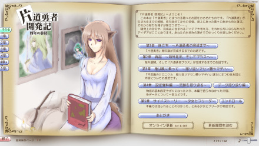

シルバーセカンド開発日誌
■
2016-04-23 (土) 片道勇者開発記 12▼【片道勇者開発記 12 準備中】
片道勇者開発記、テキスト内容は完成しておりまして、
あとは一部機能の実装やライセンス周りの
搭載準備を残すのみとなりました。
前回の記事の作業の中でどれから進めるか優先順位に迷ったのですが、
結局、周知を早めにしたほうがいいなと判断して
先に告知用の公式サイトを作らせていただきました！
『片道勇者開発記 公式ページ』

上記の公式サイトでは内容の一部を読めたり、目次があったりするので
購入をご検討中の方はぜひ一度ご覧いただけますと幸いです。
『片道勇者開発記』はゲーム型ファンブックです。
が、先日、Kindleで気軽に出版できるシステムがあることを
教えていただいたので、
「最初からKindleで出版すればよかったウオオオー！」となりながらも、
“ゲーム版の内容の評判がよければ”Kindleへの移植も検討しております。
なおゲーム版の方では音楽やエンドロールも流れるので、
パーフェクトにお楽しみいただきたい方はぜひ遠慮なくゲーム版をどうぞ！
そういう立ち位置なので、将来あるかもしれないKindle版は
忙しくて電車などでしか読めない方や、安全に保存したい向けかもしれませんね。
『片道勇者TRPG』の件が落ち着いてからになると思いますので
出せるとしても何ヶ月単位かで後になると思います。
ひとまず今は「ゲーム版」を出すべく準備中なのですが、
問題はいま緊急で別件の仕事が入っているので、
販売システムの準備に着手しづらいことです。
4月末頃から5月始めあたりは少し余裕があるようなので、
なんとかそのタイミングでリリースしたいところです。
それを過ぎると今度はTRPG関係のアレとかアレが入って来ますので、
近々に出すならそのタイミングが最後のチャンスだと思います。
クレジットカードでも気軽に買えるようにPaypalの導入なども
考えているところなんですが、しばらくは時間を回せなさそうです。
何はともあれ、大きな事故がなければ2週間以内には
リリースできると思いますので、もう少々お待ちいただけますと幸いです。 ■
2016-04-16 (土) 片道勇者開発記 11▼【片道勇者 開発記 その11】
そろそろ開発記を仕上げなければならない頃合いなんですが、
ただいま新しい仕事が入って大騒ぎしているところです。
【ショートストーリー用の絵】

かなり厳しいので普段なら難しいと言うところですが、今のところは
まだ4月末～ゴールデンウィーク中リリース目標で進めています。
内容だけで言うと全体的にざっくりと完成していて、
細かいブラッシュアップやほんの少しのテキスト作成を残す段階に
入っています。
あと開発記リリースに向けてやりたいと思っていることは以下の通りです。
・公式サイト作成 ： ちょっと間に合わなさそう。
・開発記用のライセンス販売システムとランチャープログラム作成：
いつものごとく検証に時間がかかりそうです。
お金が関わるところですからね。
・全体の内容のチェック ：
私の第一稿はだいたいひどい出来です。
ということで、慌てず急ぎつつ、やることを進めていきます。 ■
2016-04-09 (土) 片道勇者開発記10 小説▼【片道勇者 開発記 10 ノベル追加】
ということで4/1の企画ページにもちょっと書いていましたが
『片道勇者 開発記』にサイドストーリーの小説が追加決定しました！
そこまで長いものではなく、短編小説程度のボリュームです。
章構成の復習ですが、
1章『無印開発編』、
2章『プラス開発編』、
3章『フリカツ話』、
4章『資料やボツネタ・落書き』
が従来想定していた部分で、
5章に『サイドストーリー』が入ることになります。
このノベルは、脳内設定だけはあったものの、
ゲーム本編では語られなかった部分のお話となっております。
物語の主人公は、とある少女とフリーダ王女です。

※左：フリーダ王女 右：とある少女
ある程度ゲーム本編の流れもカバーするような内容になっています。
「アレとかコレがこの設定なのはこうしたかったからなのかな？」、
というのがほんのちょっと見える感じになっていると思いますので、
気になる方はお楽しみに！
リリースはちょっと伸びそうですがTRPG関連でやることも山盛りなので、
ゴールデンウィークまでにはいくらなんでも出したいところです。 ■
2016-03-19 (土) 片道勇者開発記 9▼
＜開発記トップ画面（右ページだけ）＞
脇の仕事も色々ありつつ、
『片道勇者 開発記』はそこそこ順調に進んでいます。
第3章 フリカツ編に危険な部分がないかというのもチェックしてもらったので、
あとはこの勢いでラストの4章「設定編」＋αを仕上げていく予定です。
『片道勇者 開発記』、いちおうはゲームとしての配布になりますが、
もし一定以上売れそうな見込みがでてきたら
PDF版も作ってより幅広く販売しようかなと考えています。
もしPDF版が出た際は、ライセンスキーをお持ちの方は無料で
PDF版もDLできるようにする予定です！
（※基本的にうちのゲームは解凍用ライセンスキー販売方式です）
→ と思っていたんですがKindleを目指す方向になったので
ちょっとこのプランは難しそうです、ごめんなさい！ （2016/04/23追記）
（最初から）PDFにしないの？ というご意見をいただいていますが、
それは一般的な電子書籍的な販売方式ではセキュリティ面で何ができるのか
まだ技術的によく分かっていないから、という理由が大きいです。
ちなみに、ゲーム画面サイズは1280x720となっております。
無理矢理ウィンドウを伸ばして拡張したりすることも可能になってます。
（あまりきれいには拡大できないんですけどね）
※お知らせ
来週3/26（土）の開発日誌はたぶんお休みさせていただきます。
その代わりに4/1（金）にサイト更新予定です、お楽しみに！■
2016-02-27 (土) 片道勇者開発記 8▼
今週は確定申告のために走り回ってたり、
開発記3章の挿絵をいろいろ描いていたりで、
進捗としては前回からあまり変化はありません。
【挿絵の一部】
『不思議のクロニクル 振リ返リマセン勝ツマデハ』よりナミィさん。
スライムキラーとしてお世話になりました。
第3章「フリカツ編」は今週で挿絵まで完了したので、
明日から第4章「設定編」に入っていきます。
フリカツ編は思ったよりもたくさん感想文が書けました！
ゲーム1本でここまで感想を書けたのは生まれて初めてではないでしょうか。
内容量は、全ての始まりから発売までの経緯が4割、感想文が6割という感じで、
ここからチェックが入って減ったり増えたりする予定です。■
2016-02-20 (土) 片道勇者開発記 7▼
順調に開発記記事の番号が増えていますが、
今週は『片道勇者』のバグ修正やウディタの海外対応や
その他要件が入ってきていて、進みはほどほどでした。
確定申告もまだ終わってないのでしばらくは忙しくなりそうです。
※開発記用の挿絵
そうはいいつつ、ここ数週間で見た開発記の進捗はけっこう順調で、
今の段階で全体の約65～70％くらいまで達しています。
現在は3章の「フリカツ編」の下書きがおおよそ書き終わっていて、
これからチェックを入れたり（かつチェックしてもらったり）
直したり挿絵を入れたりする段階です。
そこまで終わればあとは4章の「設定編」を残すのみですので、
道なかばを過ぎてゴールが見えてきた感触があります。
（※ちなみに復習すると1章は無印開発編、2章は海外展開＋プラス開発編です）
4章の「設定編」はボツになった案や各アイテム・NPCについての所見などを
書き連ねていこうかなと考えています。
もしかしたら普通のプレイヤーさんにとって一番楽しい項目かもしれません。
【ターゲットについて】
今さらながら、『片道勇者 開発記』はどんな人が読むかという対象者を
あまり絞っておらず、片道勇者に関連する
私が思い出せる全てのことを好き勝手に書いたものです。
基本的には、「舞台裏が気になる人」あるいは
「私がどう考えてゲームを作ってるか知りたい人」向けだと考えています。
実際のところ、この開発記は私自身のために書いているのかもしれません。
自分が『片道勇者』で得た体験や知見、たとえば
私がどこで何を学んだか、自分の強い部分や弱い部分はどこか、
そしてどこで何をやらかしてどう対応すべきだったかといったことが
文書を整理する工程でこれまで以上に頭に刻み込まれているので、
考え方の整頓・強化にも役立っている気がしています。
こういう本をあまり必要としておられない方も多いとは思いますが、
長い開発の後には、たまには何ヶ月程度か費やして
自分の頭の中を整理するための本を作ってもいいなと感じました。
ついでにちょっとした収益化に繋がればラッキー、くらいのつもりで。
しかしいざ色々書いてみると、他の人の開発記も読んでみたくなりますね。
フリーゲームでも、別売りの本を有料販売して収益化する構造は
DLCなどよりもお金を出しやすくて悪くないと思うんですが、
開発者の皆さま、いかがでしょう？■
2016-01-30 (土) 片道勇者開発記 6▼【片道勇者 開発記 6】
『片道勇者 開発記』の挿絵はこんな感じです。
ということで溜まりに溜まったウディタのバグ報告フォーラム確認に
ちょっとずつ時間を回しつつ、開発記を執筆中です。
状況としてはようやく2章編集の終わりが見えてきたあたりです
現段階の『片道勇者 開発記』のおもな構成も決まってきました。
おおよそ、以下のような章立てになると思います。
【おおまかな目次】
1章 ： 『片道勇者』無印版が生まれるまで
2章 ： 海外展開と『片道勇者プラス』が生まれるまで
3章 ： 『フリカツ』が生まれるまで・遊んで感じたこと
4章 ： データ振り返り編・ボツネタ編・過去の落書き集・少し裏設定編
5章 ： 予備枠。あるいは4章が多すぎればここに分ける
|
ということで、特に楽しい内容が思いつかなくて
今回は小さいご報告だけですが、
引き続きマイペースに進めていきたいと思います。 ■
2016-01-24 (日) 片道勇者開発記 5▼
『片道勇者 開発記』は、ただいま昔に書いた原稿の編集をしつつ、
同時にフリカツの思い出部分の原稿を書きつつで、
旧内容の編集と新内容の執筆を交互に進めています。
具体的には、全4～5章編成のうち1章の「無印編」は完了していて、
いま2章の「海外進出～プラス編」、3章の「フリカツ編」を進めているところです。
編集作業についてですが、割と書き立てほやほやの原稿なら、
「ほら、どうだ、いい内容だろ！」みたいなある種の傲慢さが
編集作業へのモチベーションに繋がってよく進む一方、
1年半以上も前に書いた原稿は完全に身に染みついてしまっていて、
重要な情報ではあるものの自分にとっては何にも感じないので
編集作業へのモチベーションを保つのが少し大変だと気付きました。
どちらというと大変なのは、編集の中に含まれる挿絵描きの作業でしょうか。
一人でやっていくプロジェクトならばやる気の管理が最重要なので、
久しぶりにいろいろと工夫を考えてみています。
片道勇者は全体的に面白かったのでこんな工夫に迫られるのもしばらくぶりで、
たまにはここでいいやり方を編み出してストックしておきたいと思っています。
いずれ、そういう小手先の手段の数々を本にまとめるときも来るかもしれません。
【開発記にフリカツの記事も入れます】
さて、短いですがこちらが本題です。
開発記に入れる予定のフリカツ関連の記事として、
「移植のきっかけ」から「コンシューマで発売されるまで」の流れも
書ける分だけ書こうと考えています。
あまり具体的な内容は載せられないかもしれませんが、
途中の判断や、ある段階ごとにどう思っていたかなどについて、
私の心中を書いていく感じになると思います。
興味がある方はお楽しみに。■
2016-01-16 (土) 片道勇者開発記 4▼
今週は開発記にオンラインアップデート機能を搭載したり
第2章「海外展開とプラス版開発」の編集を進めていたりしていました。
章ごとのロード時間が1～2秒くらいあり、
少し退屈だったのでローディング画像も作ってみました。
※XXページ執筆中！ と少し下に表示されます。
ババババッ
非常にシンプルなロード中アニメーションですが、
これのおかげであまりロード時間を感じなくなりました。
限界までリソースを切り詰めている普段の開発なら
まちがいなくロードをただのゲージ一本で済ませるところなのですが、
今は時間に余裕がある状況なので、これまでやらなかったことに
いろいろ挑戦してみて効果を確かめていきたいと考えています。
よさそうなものは今後のゲームにも搭載していきたいですね。
ロード時間の対応といえば、他にも
アイテム説明やキャラ説明、ルールが表示されるものも
だんだんと一般的になってきた印象があります。
大容量のスマホ用ソーシャルゲームなどでは
最初に長いダウンロード時間が挟まることが多いので、
そこで各社が様々な工夫をしておられて勉強になります。
ゲームにおける「最初の配慮」は、その後もずっと続く配慮の
一部でもあるので、そこを見れば全体にわたる作り込みの傾向、
あるいは開発者の熟練度が分かってしまうことも多いです。
（逆にとっつきだけが悪くて誤解されることもあってもったいない！）
作りたいところだけを作り込むのはもちろん大事ですけれど、
余裕のある限り、ゲーム内容以外ではストレスを感じにくい、
遊びやすくなるような仕組みも学んでいきたいです。
私は、「ゲームを面白くする力」には
素質やセンスの限界があると考えていて、
一方で「ゲーム内容と関係ない部分のストレス排除」は
努力やマンパワー次第で可能だと考えています。
たぶん皆さんも、後者の「ゲーム内容と関係ない部分のストレス」には
気付きやすいと思うんですよ、たとえば
「インターフェースのレスポンスが遅い！」「説明が理解できない！」とか。
そういうのは単体で作用している問題が多いので、
ただ言われた通りに直すだけで良くなることが多いです。
逆に、「ゲームを面白くする」というのは本当に難しいです。
皆さまから色んなご意見やアイデアをいただけても、
明確な方針に従ってシビアな取捨選択をしていないと
すぐ内容がチグハグになったり、ゲーム内容が崩壊したりします。
たった1つのおかしな要素を取り入れるだけでも、
ゲームを破壊することは容易です。
複雑に絡み合った要素をうまく調整できる力がないと、
面白くすることって難しいのです。
面白くするのはもうセンスの問題なのかなとも思うので、
色々と面白いものに触れて、学んで、取り込めそうな意図やセンスを
どんどん栄養にしていきたいです。
特にバランス関連の発想においてはアナログゲームがすごく勉強になったので、
無印版からプラス版への変化で面白さがだいぶマシになったと思います。
そういった話も開発記に少し書く予定ですので、気になる方はお楽しみに。■
2015-12-19 (土) 片道勇者開発記 3▼【片道勇者 開発記 3】
『片道勇者 開発記』へのご要望、皆さまありがとうございます！
いただいたご意見は全部メモさせていただいております。
小さなご質問から大きい内容まで、様々なご要望をいただいたので
お応えできそうなものに関しては
ぜひ執筆・掲載させていただきたいと考えております。
【お絵かき中】

【片道勇者プラス ちょっと修正】
今さらですが、マニアモードのみ「女神像」の前に
高確率でお供えとお賽銭が出現するように仕様変更しました。
『片道勇者プラス』において、マニアモードの「女神像」施設は
たまにゴーレムとすり替わってるだけのリスクのみの存在となっていて
近付く意味がまったくなかったため、小さいながらリターンを付けました。
問題はどうやって新たなテキストを使わずにメリットを付けるかという点！
「女神像を破壊するとアイテムが出てくる」という
すばらしい案もいただいてたのですが、知らないと駆け引きにならないので
ちょっと厳しいかな、と考えて踏み切れませんでした。
が、先日、簡単なコマンドを追加すれば指定NPCの前にアイテムを
落とせるので同じことできるじゃん！と 気付いたので、お供えを置くことにしました。
いただいたご意見は本当に大きなヒントになりました、ありがとうございます！
気付いた後なら「なんで思いつかなかったんだ！」と思うような話なんですけど、
片道勇者の開発の30％くらいはそんなのばっかりです。
無から生み出すのはいつも難易度が高いです。
『片道勇者 開発記』に対してのご要望は、
「こういう内容が欲しい」というご要望だけでなく、
「小さいご質問」などでも構いません。
引き続き募集しておりますので、「こういうの載せて欲しい！」
「ここ質問があります！」みたいなことがあれば
拍手コメントなどから1行で構いませんのでぜひどうぞ。
お応えできそうな内容に関しては、ぜひお応えしていきたいと思います。
小さいご質問は『お便りコーナー』的なものを作って
そこでお答えしていく感じにしようと考えております。お便り募集中！
それと、少し早いですが12月24日でこのサイトも17周年となります！
ここまで続けられたのも、皆さまの応援あってこそです。
いつも本当にありがとうございます。
Copyright © SmokingWOLF / Silver Second
 カテゴリ: 片道勇者
カテゴリ: 片道勇者 カテゴリ: 片道勇者
カテゴリ: 片道勇者